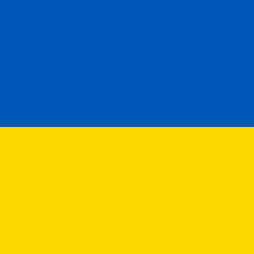

Goal:
One of my interests is the study of languages, especially Slavic ones. There is an interesting artificial language that allows all Slavs to understand each other, somewhat similar to Esperanto, created by a Polish linguist. However, this language is based on Old Slavic with the addition of many modern words and simplified forms. This language became the basis for a project on hypertext and hypermedia.
So, what is the Interslavic language more scientifically? It is an auxiliary pan-Slavic language based on the linguistic material of Old Slavic and living Slavic languages, designed for communication among their speakers. It enables communication without using individual Slavic national languages.
It incorporates languages such as:
- Ukrainian
 Russian
Russian Belarusian
Belarusian Polish
Polish Slovak
Slovak- Slovenian
 Czech
Czech- Serbian
 Macedonian
Macedonian Bulgarian
Bulgarian
Interslavic can be classified as a naturalistic artificial language. Essentially, it is a modern functional continuation of Old Slavic, aimed at mutual understanding without the need for speakers to learn each other's specific Slavic languages. The grammar and vocabulary are based on common structures in Slavic languages, with simplified grammar and minimal exceptions, making it easy for Slavic speakers to learn. It is primarily created to help travelers and people communicate both in person and online without the need for translation into multiple languages, allowing individuals to speak and write clearly for speakers of almost any living Slavic language and better understand texts in other Slavic languages.
Unlike Slovio, Interslavic does not claim independence. It is not intended for full-fledged communication but rather for pan-Slavic communication. For example, a document written in Interslavic does not need to be translated into all Slavic languages. Interslavic can be written using both the Latin and Cyrillic alphabets.
Idea:
Slavic languages are a relatively homogeneous group with three subgroups that have very similar structures and many common features in grammar, vocabulary, and syntax. Knowing one Slavic language is usually sufficient to at least partially understand speech in another Slavic language.
The main goal of the developers of Interslavic was to create a language that would be understood without prior study by all or most speakers of Slavic languages. The grammar and vocabulary are entirely based on common features of Slavic language grammars, with about 80% similarity to Russian grammar. The vocabulary is created through careful selection of words from existing Slavic languages to be understandable to all or most speakers of Slavic languages.
The language has a philosophy similar to Interlingua, which serves as a similar unifying language for Romance languages and serves as an example for the formation of Interslavic. The goal of the so-called zonal language is to use it for communication within a specific group, all members of which have passive understanding of the language without the need to study it. Unlike established universal international auxiliary languages like Esperanto, zonal languages often have a complex internal structure. On the other hand, the grammar and morphology of Interslavic contain very few exceptions, making it easy to learn.
The project is not political and does not intend to replace existing Slavic languages. It will be used as a computer language to facilitate pan-Slavic communication. The proposed language would also improve the quality of machine translation.
Background:
The history of the Interslavic or Pan-Slavic language is closely tied to the ideals of Pan-Slavic ideology, rooted in the belief in the necessity of Slavic national political unity based on ethnic, cultural, and linguistic commonality. These ideas have led to the need for a unified Slavic language.
For a long time, Russian was considered the primary candidate for the role of the common language of the Slavic peoples, being the largest in terms of geographical area and number of speakers. Throughout the 19th century, it was the de facto Slavic language used at the level of the main state language, being the native language for over half of the Slavic population in Europe. This future for the Russian language not only gained popularity among Russian-speaking Slavs but was also the main viewpoint of contemporary Pan-Slavists, such as Ludovit Stur.
Others, however, believed that Church Slavonic would be a much better and politically neutral solution for creating a common language. Church Slavonic, in previous centuries, held weight as a regional language and is still used during Slavic Orthodox liturgy, occupying a position in the Orthodox Church similar to Latin in the Catholic Church. Church Slavonic also has greater linguistic proximity to the common ancestor of all Slavic languages – Proto-Slavic. However, it has some drawbacks, including outdated Cyrillic script, highly complex grammar, and a vocabulary with many obsolete and poorly understood words by modern Slavs. Thus, early Pan-Slavic projects aimed at modernizing and using the outdated Church Slavonic language for everyday needs.
History:
The Interslavic language has a long history of development, predating by centuries even major artificial languages like Volapük and Esperanto. The earliest known attempt to create the first Interslavic language, which was successful, dates back to 1659–1666 and was undertaken by the Croatian priest Juraj Križanić.
In its modern form, Interslavic emerged in 2006 under the name "Slavjanski." In 2011, a reform and merger with two other projects occurred, after which the language was renamed "Interslavic," a term first mentioned by Czech linguist Ignác Hošek in 1908.
Early Projects:
In 1583, Croatian priest Sime Budinić translated Peter Canisius's catechism, "Summa Doctrinae Christianae," into a language he created. The translation was released in both Latin and Cyrillic scripts, using rules he devised based on the Ikavian-Chakavian dialect. Budinić's language proved to be mutually intelligible for all South Slavic peoples of that time.
In 1661, Yuriy Križanić, a Croatian theologian, philosopher, writer, linguist, historian, ethnographer, publicist, and encyclopedist living in Moscow, was accused of supporting the Uniates and sent into exile in Tobolsk, where he spent 16 years. In Tobolsk, Križanić wrote his major works, including "Politics," "On Divine Providence," "Interpretation of Historical Prophecies," "On Holy Baptism," and "Grammatical Inquiry into the Russian Language (the idea of a pan-Slavic language)," where he described and developed the idea of creating an Interslavic language. This idea was first outlined by him in 1665 in the literary work "Gramatíčno izkâzanje ob rúskom jezíku," published in Russian as "Грамматическое изыскание о русском языке (идея всеславянского языка)," where he proposed, for convenience, to replace the names of letters (az, buki, vedi, etc.) with monosyllabic ones, essentially anticipating the reform of the Russian orthography by 260 years.
Križanić named the language he created "Ruski jezik" (Russian language). It was a mixture of Russian, Church Slavonic, and Križanić's native Chakavian dialect of Serbo-Croatian, the languages he was proficient in. This blend was not only used in constructing the grammar of the artificial language but also in writing one of his works, "Politics" (1663–1666). According to the analysis by Dutch Slavist Tom Ekman, 59% of the words in "Politics" are typical for all Slavic languages, 10% have Russian and Church Slavonic origins, 9% come from Serbo-Croatian, 2.5% from Polish, and there are also Ukrainian words and a significant number of neologisms created by Križanić.
It's also noteworthy to mention the attempt by Slovak writer Ján Herkel to create a universal Slavic language in the 19th century. In 1826, he created "Univeralis Lingua Slavica" (Universal Slavic language), also known as Pan-Slavic. Unlike Križanić's project, Herkel's language was mostly based on West Slavic languages. Throughout his life, he tried to promote the idea of the necessity of creating a unified Pan-Slavic language.
During the second half of the 19th century, Pan-Slavic language ideas were mainly prominent among Slovenian and Croatian linguists. At that time, the only independent Slavic country was the Russian Empire, while other Slavic peoples living in non-Slavic countries, without clear boundaries, often had contact with each other, especially in the tense situation on the Balkan Peninsula, where many South Slavic nations lived. Apart from attempts to create a unified South Slavic grammar, there were also efforts to create a single South Slavic language, a successor to the Illyrian language that could become a common language for all Slavs in the future.
In the South Slavic direction of creating a Pan-Slavic language, the important work of the Slovenian Austro-Slavist Matija Mačar deserves special attention. In 1865, he published the book "Uzajemni Pravopis Slavjanščine" (Mutual Slavic Orthography), describing the best way, in his opinion, to communicate among Slavic peoples. This involved taking an existing language as a basis and gradually modifying it step by step. The first step was to change the spelling of each individual language and bring it closer to the final Interslavic form, which he derived from the five largest Slavic languages of his time: Russian, Church Slavonic, Polish, Czech, and Serbian.
Besides the book on a unified Slavic language, Mačar used his language in his published biography of Cyril and Methodius, as well as in a journal he published in 1873–1875. A fragment of Mačar's language can still be seen in the church of the Austrian town of Görz. Other noteworthy projects include South Slavic languages created by Croat Matija Ban, Slovenians Radoslav Razlag and Božidar Rajč, and Macedonian-Bulgarian Grigor Parlichev.
All authors of Pan-Slavic languages shared the belief that Slavic languages were merely dialects of a forgotten common language and regretted that these dialects had gone beyond mutual understanding. In creating their languages, they attempted to reverse this process, with the long-term goal of replacing all existing Slavic languages with a single common one.
Linguists who contributed to the development of Pan-Slavic languages in the 19th century:
Grigor Parlichev (1830–1893):
Grigor Parlichev, a Macedonian-Bulgarian poet and linguist, made his contribution to the development of Pan-Slavic languages in the 19th century. His works reflect the aspiration to create a unified language for the Slavs.
Matija Ban (1818–1903):
Matija Ban, a Croatian writer, also attempted to create a universal Slavic language in the 19th century. His contribution to Pan-Slavic linguistics was significant.
Radoslav Razlag (1826–1880):
Radoslav Razlag, a Slovenian linguist, contributed to the idea of a Pan-Slavic language. His works in the 19th century reflect the desire to unite Slavic languages.
Božidar Raič (1827–1886):
Božidar Raič, another Croatian linguist, participated in discussions and developments aimed at creating a common Slavic language. His contribution to this field is also notable.
History in the 20th Century:
In the early 20th century, it became clear that the idea of a unified Pan-Slavic literary language had become unrealistic due to the irreversible divergence of Slavic languages. The dreams of Pan-Slavists about a single language for all Slavic peoples collapsed, and instead, two united Slavic states emerged—Yugoslavia and Czechoslovakia.
Nevertheless, the need for a common language for international Slavic communication persisted. During this period, the center of Pan-Slavic activities shifted to the Czech lands. In 1907, Czech dialectologist Ignác Hošek proposed creating a common literary language for all Slavs in the Austro-Hungarian Empire.
During the same period, efforts were made to create a language that would serve as an additional second language for inter-Slavic communication, rather than replacing individual Slavic languages. Despite failures in implementation, these projects attracted the attention of linguists.
In the 1950s, Czech poet and former Esperantist Ladislav Podmele (1920–2000), also known as Jiří Karen, worked with a group of prominent interlinguists on the "Meždoslavjansky jezik" (Inter-Slavic Language) project. Probably due to the political realities of those days, the language was primarily based on Russian.
▲ To top